2.2.2. Метод встречи посередине
2.2.2. Метод встречи посередине
Рассмотрим универсальный метод криптоанализа, который основан на парадоксе дней рождения и подходит для взлома многих алгоритмов с секретным ключом. Парадокс дней рождения состоит в том, что если мы возьмем группу из 23 случайных человек то с большой вероятностью у пары из них дни рождения совпадут, хотя вероятность того, что в группе из 23 человек встретится человек с заранее заданным днем рождения составляет 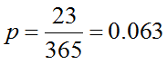. В общем виде парадокс дней рождения формулируется так: если 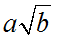 предметов выбираются с возвращением из некоторой совокупности b, то вероятность того, что два из них совпадут, равна 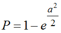. Метод встречи посредине основан на парадоксе дней рождения.
Пусть необходимо найти ключ k по открытому тексту x и шифртексту y. Если множество ключей замкнуто относительно композиции, т. е. для любых ключей  найдется ключ k такой, что результат последовательного шифрования с ключами
найдется ключ k такой, что результат последовательного шифрования с ключами  равен результату шифрования этого же текста с ключом k, т. е. 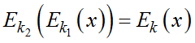, то это свойство можно использовать для взлома шифров. Поиск ключа k сведем к поиску эквивалентной ему пары ключей 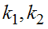. Для текста x построим базу данным содержащих множество ключей 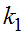 и соответствующих им криптограмм 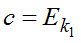(x) и упорядочим ее по криптограммам с. Объем базы данных выбираем равным 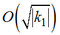, где 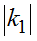 − мощность множества ключей . Затем подбираем случайным образом ключи 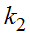 для расшифрования шифртекстов y. Результат расшифрования v сравниваем с базой данных, а именно с значениями c. Если текст v окажется одной из криптограмм с, то пара ключей эквивалентна ключу k. Алгоритм является вероятностным и подходит не для всех алгоритмов, например алгоритм DES не подвержен взлому с использованием алгоритма встречи посередине.
равен результату шифрования этого же текста с ключом k, т. е. 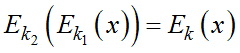, то это свойство можно использовать для взлома шифров. Поиск ключа k сведем к поиску эквивалентной ему пары ключей 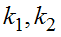. Для текста x построим базу данным содержащих множество ключей 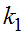 и соответствующих им криптограмм 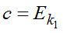(x) и упорядочим ее по криптограммам с. Объем базы данных выбираем равным 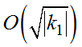, где 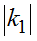 − мощность множества ключей . Затем подбираем случайным образом ключи 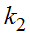 для расшифрования шифртекстов y. Результат расшифрования v сравниваем с базой данных, а именно с значениями c. Если текст v окажется одной из криптограмм с, то пара ключей эквивалентна ключу k. Алгоритм является вероятностным и подходит не для всех алгоритмов, например алгоритм DES не подвержен взлому с использованием алгоритма встречи посередине.